4. 图像处理
图像处理是指利用计算机对图像进行分析和处理，以达到特定需求的技术。它在工业自动化、医疗诊断、安全监控等领域有着广泛的应用。Python中有多个用于图像处理的库，如Pillow（PIL）、OpenCV、SimpleCV等。
Pillow是Python Imaging Library（PIL）的一个分支，支持多种图像文件格式，并提供了强大的图像处理功能。本章将介绍如何使用Pillow库进行图像文件操作、图像编辑、图像合成、图像增强以及添加滤镜、添加文字等常用图像处理方法。
4.1 需求分析
在日常工作和生活中，图像处理技术扮演着越来越重要的角色。无论是制作证件照、创作艺术作品、对老旧照片进行修复，或是批处理图片，都离不开图像处理技术的支持。通过学习和掌握图像处理技术可以创作出独特的图像作品。
- 批处理图像文件：来源不同的图像（如社交媒体、相机拍摄、网络下载等），其文件尺寸、分辨率、色彩风格等各不相同，直接使用可能无法满足特定的展示需求（如网页展示、打印、社交媒体发布等）。需高效对图像进行批量处理，自动完成优化操作。
- 图像合成与创意设计：制作海报、广告或平面设计时，需用到图像混合、遮罩合成、图像增强、滤镜效果等技术，完成有创意的图像作品。
- 满足不同用途的图像处理：不同场景对图像处理要求不同——社交媒体发布需调整尺寸和风格，电商需批量优化商品图，摄影后期需调色加滤镜，印刷出版需调整分辨率和色彩模式。
4.2 学习目标
- 理解图像存储机制，掌握图像处理原理：学习图像文件操作、基本编辑方法，理解图像色彩模式（RGB、CMYK、HSV等）原理及应用领域。
- 掌握图像处理技术，提升创意表达能力：熟悉图像合成、增强、滤镜等方法，掌握数字艺术创作技巧，将创意转化为技术实现。
- 学习自动批量处理图像，提高工作效率：通过编程实现图像自动批处理，减少重复劳动，掌握批处理函数编写与优化。
- 扩展应用场景，增强创新能力：学习制作九宫格/六宫格图像、批处理证件照等，设计个性化图像处理方案。
4.3 环境要求
Python环境、pillow库。
pillow库安装命令：
pip install pillow4.4 图像处理1——图像文件操作
1. 相关知识
（1）图像色彩模式
色彩模式是按规则描述颜色的方法，不同模式适用于不同场景。常用色彩模式包括RGB、CMYK、HSV、Lab等，具体说明如下：
- RGB色彩模式：基于光的三基色（红R、绿G、蓝B），不同比例混合形成各种色光。适用于显示器、投影仪、相机等屏幕显示设备，是工业界颜色标准。
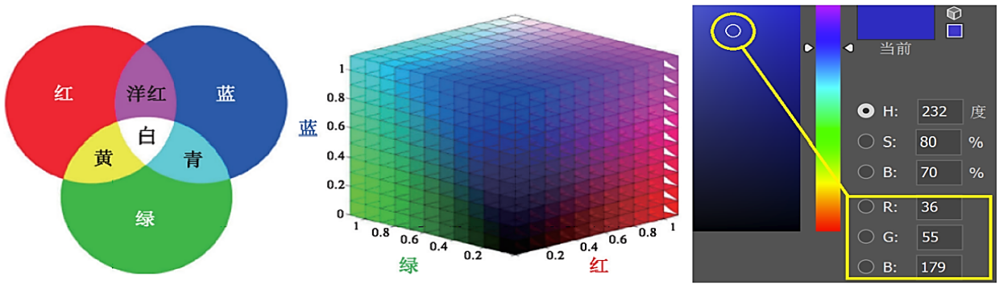
图4-1 RGB色彩模型
- CMYK色彩模式：基于油墨反射原理，减法三原色（青色C、洋红M、黄色Y）+黑色K（强化暗调）。适用于打印机、印刷系统，浓度范围0%~100%。
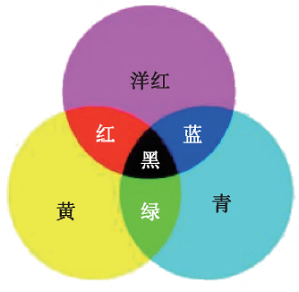
图4-2 CMYK色彩模式
- HSV色彩模式：基于人类视觉感知，包含色相（Hue）、饱和度（Saturation）、明度（Value）。色相是颜色名称，饱和度越高色彩越纯，明度决定明暗。适用于图像编辑。
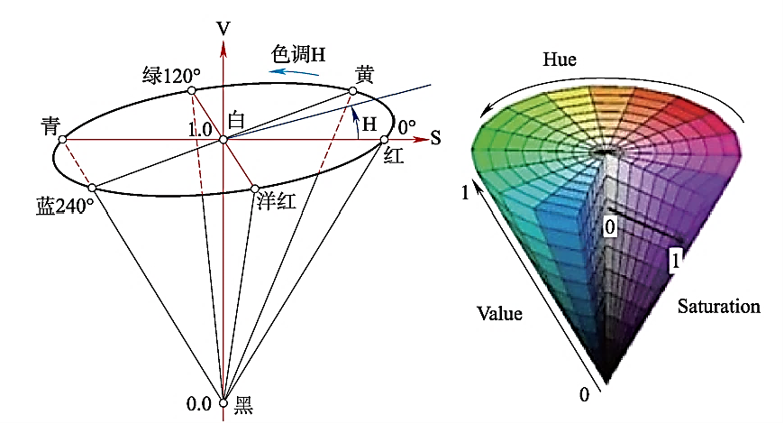
图4-3 HSV色彩模式
- Lab色彩模式：国际照明委员会（CIE）制定的设备无关色彩空间，包含人类视觉可感知的所有颜色，弥补RGB和CMYK不足。处理速度快，适用于色彩管理。
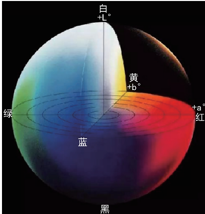
图4-4 Lab色彩模式
色彩模式是数字图像中表示颜色和色彩信息的方法。不同的色彩模式适用于不同的应用场景，它们决定了图像中可以使用的颜色数量和类型。图像处理中有时需要将图像从一种色彩模式转换为另一种模式，以满足特定的需求。如图4-5所示，分别以HSB、RGB、Lab和CMYK表示颜色信息。
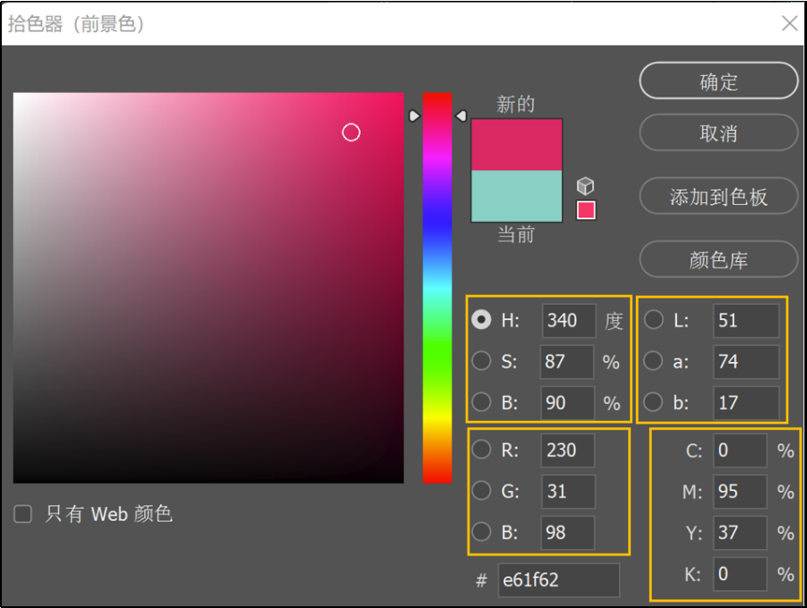
图4-5 拾色器中的多种色彩模式（HSB、RGB、Lab、CMYK）
各种色彩模式会以不同的方式表示颜色、影响图像的显示、编辑和输出效果。如：RGB色彩模式适用于屏幕显示；CMYK色彩模式适用于印刷；HSV色彩模式适用于图像编辑；Lab色彩模式适用于色彩管理。
（2）Image模块
- Image模块常用方法
Image是Pillow库中最重要的模块，通过调用Image对象的一系列属性和方法，可以实现图像的读取、显示、保存、裁剪、旋转、缩放等操作。Image模块常用方法如表4-1所示。
表4-1 Image模块常用方法
| 名称 | 描述 | 示例 |
|---|---|---|
| open() | 打开图像文件 | img = Image.open('图像文件') |
| show() | 显示图像 | img.show() |
| save() | 保存图像 | img.save('图像文件') |
| crop() | 裁剪图像（参数：(x1,y1,x2,y2)） | cropped_img = img.crop((100,100,300,300)) |
| resize() | 调整图像大小（参数：(宽,高)） | resized_img = img.resize((400,300)) |
| rotate() | 旋转图像（参数：角度） | rotated_img = img.rotate(90) |
| convert() | 转换图像色彩模式 | converted_img = img.convert('L')（转为灰度图） |
| paste() | 粘贴图像到指定位置 | dest_img.paste(src_img, (50,50)) |
| new() | 新建图像（参数：模式、大小、背景色） | new_img = Image.new('RGB', (800,600), 'white') |
- 新建图像文件
Image.new(mode, size, color )方法，新建图像文件并指定图像的模式、大小和背景颜色。其中：“mode”指定图像色彩模式。常用图像色彩模式见表4-2。
表4-2 图像色彩模式
| 图像色彩模式 | 说明 |
|---|---|
| 1 | 单色通道，1位像素，取值0-1（0=黑，1=白） |
| L | 灰度图，8位像素，取值0-255 |
| RGB | 真彩色，3×8位像素，每个通道0-255 |
| RGBA | 真彩色+透明通道，4×8位像素 |
| CMYK | 四色通道，4×8位像素，适用于印刷 |
| LAB | L*a*b颜色空间，3×8位像素 |
| HSV | 色相、饱和度、明度空间，3×8位像素 |
例4-1：打开图像并查看基本信息
from PIL import Image
# 打开图像
img = Image.open("images/校园风光1.jpg")
# 显示图像
img.show()
# 获取并打印图像属性
print(f"图像的大小为: {img.size}") # 输出：(宽度, 高度)
print(f"图像的格式为：{img.format}") # 输出：JPEG/PNG等
print(f"图像的模式为：{img.mode}") # 输出：RGB/L等
print(f"获取(100,100)处的像素值：{img.getpixel((100,100))}") # 输出：(R,G,B)或灰度值图像内容如图4-6所示。
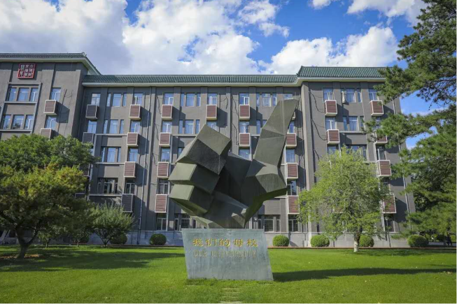
图4-6 图像显示效果
图像属性如图4-7所示。
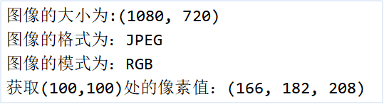
图4-7 图像属性输出结果
例4-2：图像模式转换
# 转换图像为多种颜色模式
from PIL import Image
# 打开原始图像
image = Image.open("images/街景.jpg")
w, h = image.size # 获取图像宽高
# 新建空白图像（RGB模式，尺寸：2*宽+10, 2*高+10，背景黑）
new_image = Image.new('RGB', (w * 2 + 10, h * 2 + 10))
# 定义要转换的模式和粘贴位置
modes = ['1', 'HSV', 'RGB', 'L'] # 位图、HSV、RGB、灰度
positions = [(0, 0), (w+10, 0), (0, h+10), (w+10, h+10)] # 粘贴坐标
# 循环转换并粘贴图像
for mode, pos in zip(modes, positions):
converted_image = image.convert(mode)
new_image.paste(converted_image, pos)
# 保存并显示
new_image.save('new_image.jpg')
new_image.show()转换后的图像如图4-8所示。
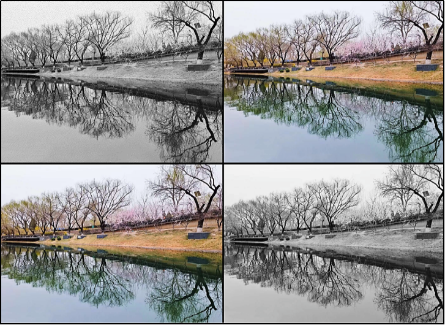
图4-8 不同图像色彩模式效果
（3）OS模块
OS模块提供了与操作系统交互的一些功能，常用于操作文件和目录、获取系统信息、执行操作系统命令等。OS模块常用方法及其功能描述如表4-3所示。
表4-3 OS模块常用方法
| 方法名称 | 功能描述 |
|---|---|
| os.path.basename(path) | 从路径中提取文件名 |
| os.mkdir(path) | 创建新目录 |
| os.remove(path) | 删除文件 |
| os.rename(src, dst) | 重命名文件/目录 |
| os.listdir(path) | 列出目录中所有文件和子目录 |
| os.path.exists(path) | 检查路径是否存在 |
| os.path.isfile(path) | 检查路径是否为文件 |
| os.path.splitext(path) | 分割文件名和扩展名 |
示例：查看“file.txt”的文件名和扩展名
import os
filename = 'file.txt'
# 分割文件名和扩展名
file_name, file_extension = os.path.splitext(filename)
print(f"文件名：{file_name}") # 输出：file
print(f"扩展名：{file_extension}") # 输出：.txt输出结果：
文件名：file 扩展名：.txt
当需要处理某类文件时，常使用os.path.splitext提取文件扩展名，以获取文件类型。
2. 案例目标
制作九宫格图片效果：将一张图像分割为9张等大小图像，再将分割后的图像重新拼合成九宫格形式。掌握图像分割与拼合技术，理解双重循环和文件操作的应用，可扩展至六宫格、四宫格等场景。
3. 案例实现
案例分为“图像分割”和“图像拼合”两部分。
（1）图像分割
将一张图像均匀分割成九张小图像。首先需要计算原始图像的宽度和高度，将其分别除以3，得到每个小图像的尺寸。然后检查目标文件夹是否存在，若不存在则自动创建文件夹，以便将所有小图像有序存储。通过双重循环遍历图像的行和列，依次截取每个小图像的区域，并将其保存为独立的文件。为了确保每个小图像的文件名唯一，使用计数器为文件名添加序号。最终，原始图像被分割为九个等大的小图像并保存这些图像，为后续的图像处理或拼合操作提供基础。
# 1. 导入库
import os
from PIL import Image
# 2. 读取图像并计算裁剪尺寸
im = Image.open('images/校园风光.jpg')
width = im.width // 3 # 每个小图像的宽度（整除3）
height = im.height // 3 # 每个小图像的高度（整除3）
# 3. 初始化参数与创建文件夹
start_x = 0 # 裁剪起始X坐标
start_y = 0 # 裁剪起始Y坐标
z = 1 # 图像命名计数器
# 检查文件夹是否存在，不存在则创建
if not os.path.exists('imgs'):
os.mkdir('imgs')
# 4. 双重循环裁剪图像（3行3列）
for i in range(3): # 遍历行
for j in range(3): # 遍历列
# 计算裁剪区域：(左, 上, 右, 下)
left = start_x
upper = start_y
right = start_x + width
lower = start_y + height
# 裁剪并保存
crop = im.crop((left, upper, right, lower))
crop.save(f"imgs/aa{z}.jpg")
# 更新X坐标和计数器
start_x += width
z += 1
# 重置X坐标，更新Y坐标（进入下一行）
start_x = 0
start_y += height在每次循环中，使用im.crop()根据当前的坐标和计算出的尺寸,裁剪出一个小图像。使用crop.save()将裁剪好的小图像保存到名为imgs的文件夹中。文件名由变量z和前缀“aa”组成，确保每个图像的名称都是唯一的。每次循环后，将左上角坐标的x轴向右移动裁剪尺寸的宽度，确保每次循环都能裁剪出新的图像区域。每次循环结束后，将计数器z增加1，以便为下一个裁剪的图像命名。程序运行后，imgs文件夹中的内容如图4-9所示。
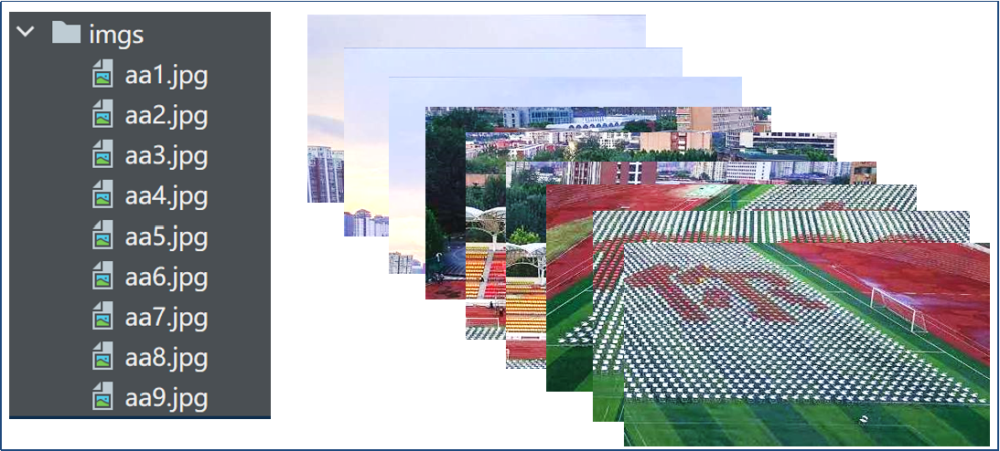
图4-9 分割后的图像（imgs文件夹内容）
（2）图像拼合
将九张小图像拼合为一张九宫格图像，首先需要创建一个新的空白图像文件，其尺寸略大于原始图像，以便为图像之间的间隙留出空间。然后，通过双重循环遍历九张小图像，依次将它们粘贴到新图像的指定位置。为了增强视觉效果，可以在图像之间添加一定的间隙（如10像素），使九宫格布局更加清晰。最终，所有小图像被整齐地拼合成一张完整的九宫格图像，并可以通过保存功能将其存储为新的文件，或直接显示以供查看。
# 1. 新建空白图像（比原图大20像素，背景白）
im_out = Image.new("RGB", (im.width + 20, im.height + 20), "white")
# 2. 初始化粘贴坐标
x = 0
y = 0
# 3. 读取所有小图像并存储到列表
im_list = []
for i in range(9):
im_list.append(Image.open(f'imgs/aa{i+1}.jpg'))
# 4. 双重循环粘贴图像
p = 0 # 小图像列表索引
for i in range(3): # 遍历行
for j in range(3): # 遍历列
# 粘贴当前小图像
im_out.paste(im_list[p], (x, y, x + width, y + height))
# 更新X坐标（加10像素间隙）
x += width + 10
p += 1
# 重置X坐标，更新Y坐标（加10像素间隙）
x = 0
y += height + 10
# 5. 显示并保存
im_out.show()
im_out.save('output_rgb.jpg') # 保存为RGB模式
im_out.convert("CMYK").save('output_cmyk.jpg') # 转换为CMYK模式保存拼合效果如图4-10所示。
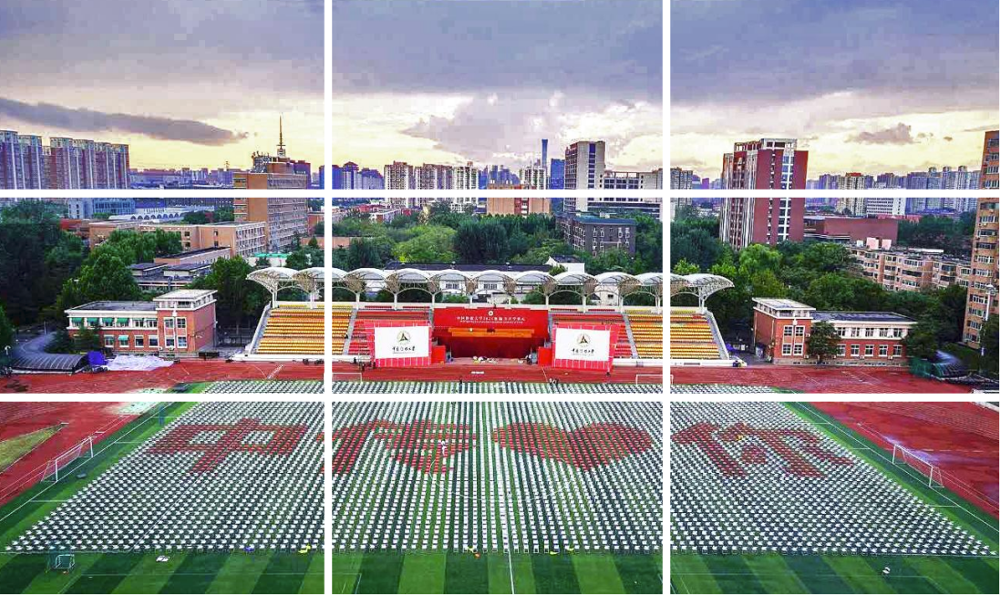
图4-10 九宫格拼合效果
4. 案例总结及思考
（1）案例总结
- 图像模式：不同模式适用于不同场景——RGB用于屏幕显示，CMYK用于印刷，灰度模式用于黑白处理，Lab用于高质量色彩管理。选择模式需结合最终用途。
- 图像分割与拼合：双重循环是核心——分割时遍历行和列，计算裁剪坐标；拼合时同样遍历，按坐标粘贴并添加间隙。文件操作（创建文件夹、保存图像）确保流程自动化。
（2）案例思考
当前程序存在的问题：
- 代码结构松散：分割和拼合逻辑无函数封装，可读性、可维护性差。
- 灵活性不足：仅支持3×3九宫格，无法调整行列数或间隙大小。
- 缺少错误处理：未处理文件不存在、格式不支持等异常，健壮性差。
优化方向：
- 模块化设计：将分割、拼合封装为函数（如split_image、combine_images）。
- 参数化配置：支持自定义行列数、间隙大小，适应更多场景。
- 异常处理：添加try-except捕获文件操作异常，提供错误提示。
4.5 图像处理2——图像合成
1. 相关知识
（1）图像混合模式
图像混合模式通过数学运算融合两张图像的像素值，产生不同视觉效果。Pillow的ImageChops模块提供多种混合函数，常用模式如下：
正片叠底（multiply）
减色运算，混合后图像变暗。公式：out = (img1 * img2) / 255，适用于叠加阴影、增强对比度。
滤色（screen）
加色运算，混合后图像变亮。公式：out = 255 - ((255-img1)*(255-img2))/255，适用于叠加高光、提亮画面。
变暗/变亮（darker/lighter）
变暗：取两张图像对应像素最小值；变亮：取最大值。适用于简单的亮度调整。
相加/相减（add/subtract）
相加：out = (img1+img2)/scale + offset；相减：out = (img1-img2)/scale + offset，适用于亮度叠加或差值计算。
反相（invert）
像素值取反（255-原像素），产生负片效果，适用于艺术化处理。
叠加/柔光（overlay/soft_light）
叠加结合正片叠底和滤色，产生光泽效果；柔光根据原图亮度调整混合效果，适用于质感增强。
（2） ImageChops模块的“混合模式”
Pillow库的ImageChops模块中包含了多种图像混合模式，可以创建多种图像叠加效果。
例4-5：多种混合模式实现
# 图像混合模式函数
from PIL import Image, ImageChops
# 定义混合函数
def blend_images(image1, image2, mode):
if mode == 'normal': # 平均混合
return ImageChops.blend(image1, image2, 0.5)
elif mode == 'multiple': # 正片叠底
return ImageChops.multiply(image1, image2)
elif mode == 'screen': # 滤色
return ImageChops.screen(image1, image2)
elif mode == 'invert': # 反相（仅处理image1）
return ImageChops.invert(image1)
else:
raise ValueError("Unsupported blend mode")
# 加载并调整图像大小（确保尺寸一致）
image1 = Image.open('images/天坛.jpg')
image2 = Image.open('images/天空.jpg')
if image1.size != image2.size:
image2 = image2.resize(image1.size)
# 测试不同混合模式并保存
modes = ['normal', 'multiple', 'screen', 'invert']
for mode in modes:
blended_img = blend_images(image1, image2, mode)
blended_img.save(f'blended_image_{mode}.png')图4-11 原始图像素材（天坛、天空）
使用不同混合模式的图像效果，如图4-12所示。
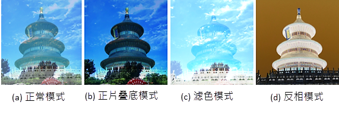
图4-12 不同混合模式效果（a-正常，b-正片叠底，c-滤色，d-反相）
（3）使用Image.blend()进行图像合成
Image.blend(im1, im2, alpha)根据不透明度（alpha：0~1）混合两张图像，alpha=0显示im1，alpha=1显示im2，要求两图尺寸和模式一致。
例4-6：Image.blend()混合示例
#
from PIL import Image
# 加载图像
img1 = Image.open('images/blend1.jpg')
img2 = Image.open('images/blend2.jpg')
# 调整尺寸一致
if img1.size != img2.size:
img2 = img2.resize(img1.size)
# 设置不透明度（0.6：60% img2，40% img1）
alpha = 0.6
blended_img = Image.blend(img1, img2, alpha)
# 保存并显示
blended_img.save('blended_image.jpg')
blended_img.show()将图像A和图像B合成图像C的效果。如图4-13所示。
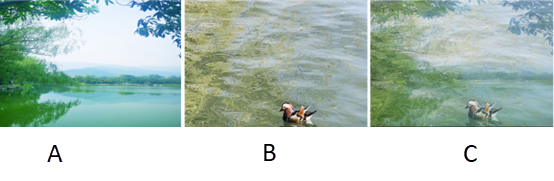
图4-13 Image.blend()合成效果（A和B混合为C）
（3）使用遮罩进行图像合成
ImageChops.composite(im1, im2, mask)通过遮罩（mask）控制im1和im2的显示区域，mask模式需为“1”“L”或“RGBA”，三图尺寸需一致。
例4-7：遮罩合成示例。以“螺旋.png”为遮罩文件，将“树叶.jpg” “美景.jpg”进行图像混合。原始图像内容如图4-14所示。遮罩合成的效果如图4-15所示。
from PIL import Image, ImageChops
# 加载图像（前景1、前景2、遮罩）
im1 = Image.open("images/树叶.jpg")
im2 = Image.open("images/美景.jpg")
mask = Image.open("images/螺旋.png")
# 调整尺寸一致
im2 = im2.resize(im1.size)
mask = mask.resize(im1.size)
# 遮罩合成
composite_img = ImageChops.composite(im1, im2, mask)
# 显示并保存
composite_img.show()
composite_img.save("images/遮罩合成.jpg")图4-14 遮罩合成原始素材（树叶、美景、螺旋遮罩）
图4-15 遮罩合成效果（左：im1，中：im2，右：合成结果）
2. 案例目标
实现图像合成工具：支持多种混合模式（正片叠底、滤色等），支持遮罩局部融合，自动处理图像尺寸不一致问题，支持命令行输入参数，保存并展示处理结果。
3. 案例实现
本案例通过Pillow库实现图像混合和遮罩合成，核心为混合函数、遮罩合成函数及主程序交互逻辑。
# 1. 导入库
from PIL import Image, ImageChops
# 2. 定义图像混合函数
def blend_images(image1, image2, mode):
"""根据混合模式混合两张图像"""
if mode == 'multiply': # 正片叠底
return ImageChops.multiply(image1, image2)
elif mode == 'screen': # 滤色
return ImageChops.screen(image1, image2)
elif mode == 'darker': # 变暗
return ImageChops.darker(image1, image2)
elif mode == 'lighter': # 变亮
return ImageChops.lighter(image1, image2)
elif mode == 'overlay': # 叠加
return ImageChops.overlay(image1, image2)
elif mode == 'soft_light': # 柔光
return ImageChops.soft_light(image1, image2)
else:
raise ValueError("Unsupported blend mode")
# 3. 定义遮罩合成函数
def composite_images(image1, image2, mask):
"""使用遮罩合成两张图像"""
return ImageChops.composite(image1, image2, mask)
# 4. 主程序
def main():
# 输入参数
img1_path = input("请输入要合成的第一张图像路径（如 images/夜色.jpg）：")
img2_path = input("请输入要合成的第二张图像路径（如 images/烟花.jpg）：")
background_path = input("请输入背景图像路径（如 images/草地.jpg）：")
mask_path = input("请输入遮罩图像路径（如 images/小鹿.png）：")
blend_mode = input("请输入混合模式（如 screen、multiply 等）：")
# 打开图像（异常处理）
try:
img1 = Image.open(img1_path)
img2 = Image.open(img2_path)
background = Image.open(background_path)
mask = Image.open(mask_path)
except FileNotFoundError:
print("文件路径错误，请检查文件是否存在。")
return
# 调整尺寸一致
img2 = img2.resize(img1.size)
background = background.resize(img1.size)
mask = mask.resize(img1.size)
# 图像混合（异常处理）
try:
blended_img = blend_images(img1, img2, blend_mode)
blended_img.save(f"blended_image_{blend_mode}.jpg")
blended_img.show()
except ValueError as e:
print(f"混合模式错误：{e}")
return
# 遮罩合成
composite_img = composite_images(blended_img, background, mask)
composite_img.save("composite_image.jpg")
composite_img.show()
# 验证像素值
print(f"原始图像1（{img1_path}）在(100, 100)处的像素值：{img1.getpixel((100, 100))}")
print(f"原始图像2（{img2_path}）在(100, 100)处的像素值：{img2.getpixel((100, 100))}")
print(f"混合图像（{blend_mode}模式）在(100, 100)处的像素值：{blended_img.getpixel((100, 100))}")
print(f"遮罩合成图像在(100, 100)处的像素值：{composite_img.getpixel((100, 100))}")
# 运行主程序
if __name__ == "__main__":
main()运行程序，按照要求提供图像文件、背景文件、遮罩文件，并选择混合模式。如图4-16所示。
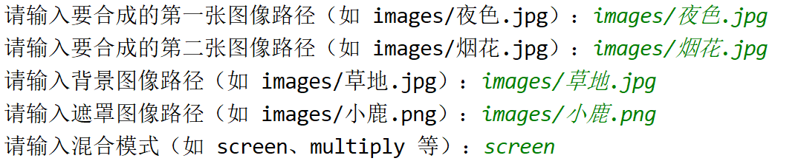
图4-16 命令行输入参数
输出结果如图4-17所示，可以验证使用某种混合模式后，该像素点的RGB值。
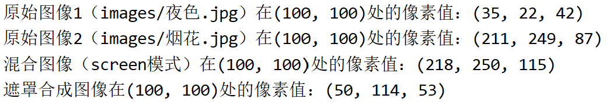
图4-17 像素值验证输出
利用上面的程序还可以实现很多效果，如：将图像“夜色”和“烟花”经过“滤色”混合模式，合成如图 4-18所示的效果。以“草地”为背景、经过“滤色”合成后的图像做前景、以“小鹿”作为遮罩文件，遮罩合成的效果如图4-19所示。
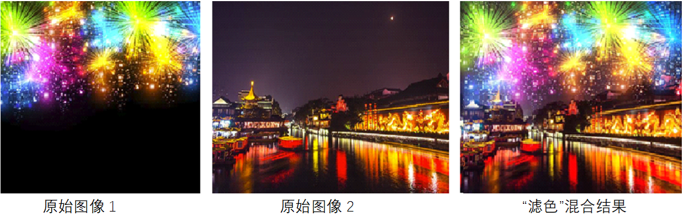
图4-18 原始图像（夜色、烟花）与滤色混合效果
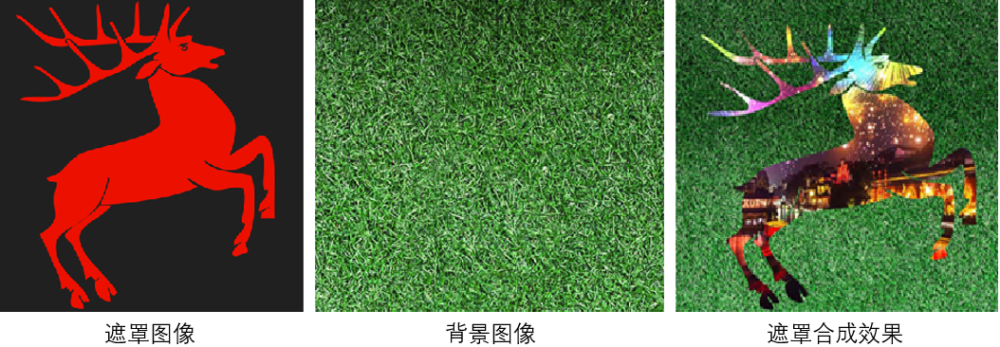
图4-19 遮罩合成效果（背景：草地，前景：混合图像，遮罩：小鹿）
4. 案例总结及思考
案例总结：
- 图像混合：掌握多种混合模式（正片叠底、滤色等），根据需求选择模式实现不同视觉效果。
- 遮罩合成：通过遮罩控制显示区域，实现局部融合，增强创意性。
- 异常处理：捕获文件操作和模式错误，提升程序健壮性。
案例思考：
- GUI扩展：结合tkinter开发图形界面，方便用户选择文件、模式和预览效果。
- 色彩协调：当两张图像色彩差异大时，可结合ImageEnhance模块调整亮度、对比度，使画面和谐。
4.6 图像处理3——图像增强与图像滤镜
1. 相关知识
（1）图像增强（ImageEnhance模块）
ImageEnhance模块提供亮度、对比度、锐度、颜色的调整功能，通过enhance(factor)实现，factor=1为原图，<1减弱，>1增强。常用方法如表4-4所示。
表4-4 ImageEnhance模块常用方法
| 方法 | 描述 |
|---|---|
| Brightness(factor) | 调整亮度，factor>1变亮，<1变暗 |
| Contrast(factor) | 调整对比度，factor>1更鲜明，<1更柔和 |
| Sharpness(factor) | 调整锐度，factor>1更清晰，<1更模糊 |
| Color(factor) | 调整颜色饱和度，factor>1增强，<1减淡 |
| enhance(factor) | 通用增强方法，结合上述类型使用 |
使用方法：首先创建对应的增强调整器；然后调用enhance()方法，根据指定的增强系数（小于1表示减弱，大于1表示增强，等于1表示原图不变）进行调整；最后输出调整后的图像。
例4-9：打开“校园.jpg”，分别对图像进行“亮度增强”、“对比度增强”、“颜色增强”、“清晰度增强”，最终效果如图4-20所示。
# 图像增强示例
from PIL import Image, ImageEnhance
# 加载图像
img = Image.open("images/校园.jpg")
img.show() # 显示原图
# 1. 亮度增强（3倍）
brightness_enhancer = ImageEnhance.Brightness(img)
img_bright = brightness_enhancer.enhance(3)
img_bright.show()
# 2. 对比度增强（1.5倍）
contrast_enhancer = ImageEnhance.Contrast(img_bright)
img_contrast = contrast_enhancer.enhance(1.5)
img_contrast.show()
# 3. 颜色增强（1倍：无变化）
color_enhancer = ImageEnhance.Color(img_contrast)
img_color = color_enhancer.enhance(1)
img_color.show()
# 4. 锐度增强（1.8倍）
sharpness_enhancer = ImageEnhance.Sharpness(img_color)
img_sharp = sharpness_enhancer.enhance(1.8)
img_sharp.show()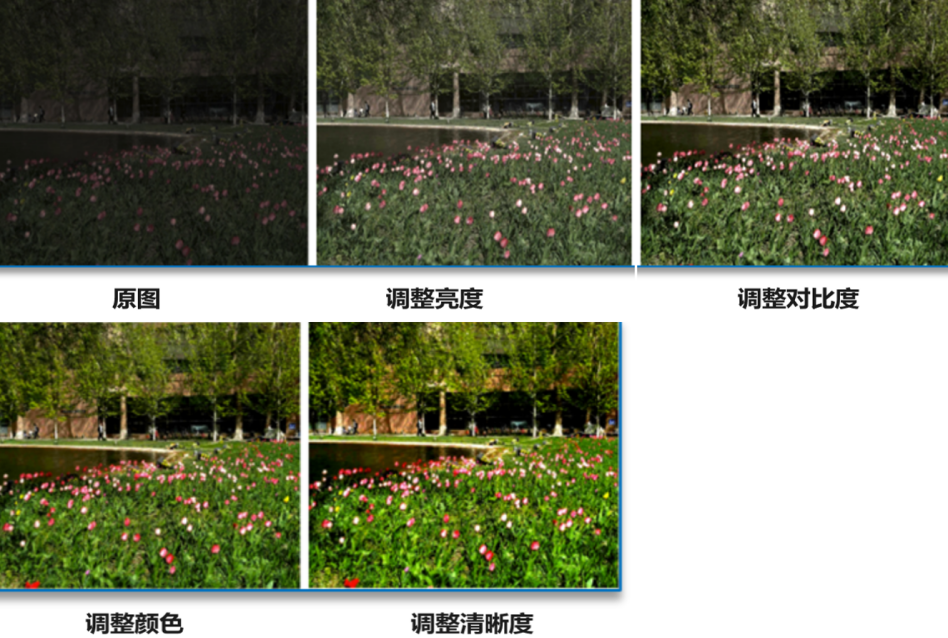
图4-20 图像增强效果（从左到右：原图、亮度、对比度、颜色、锐度）
（2）图像滤镜（ImageFilter模块）
ImageFilter模块提供多种滤镜，通过image.filter(ImageFilter.滤镜名)应用，常用滤镜如表4-5所示。
表4-5 ImageFilter模块常用滤镜
| 滤镜名称 | 作用 |
|---|---|
| BLUR | 普通模糊 |
| GaussianBlur(n) | 高斯模糊（n为模糊程度） |
| SHARPEN | 锐化 |
| CONTOUR | 轮廓提取 |
| EMBOSS | 浮雕效果 |
| FIND_EDGES | 边缘检测 |
| EDGE_ENHANCE | 边缘增强 |
| SMOOTH | 平滑处理 |
例4-10：为图像添加轮廓滤镜、浮雕滤镜、查找边缘滤镜以及锐化滤镜，添加各个滤镜后的效果如图4-21所示。
from PIL import Image, ImageFilter
# 加载图像
im = Image.open("images/骏马.jpg")
# 应用不同滤镜
im_contour = im.filter(ImageFilter.CONTOUR) # 轮廓
im_emboss = im.filter(ImageFilter.EMBOSS) # 浮雕
im_edges = im.filter(ImageFilter.FIND_EDGES) # 边缘检测
im_sharpen = im.filter(ImageFilter.SHARPEN) # 锐化
# 显示效果
im_contour.show()
im_emboss.show()
im_edges.show()
im_sharpen.show()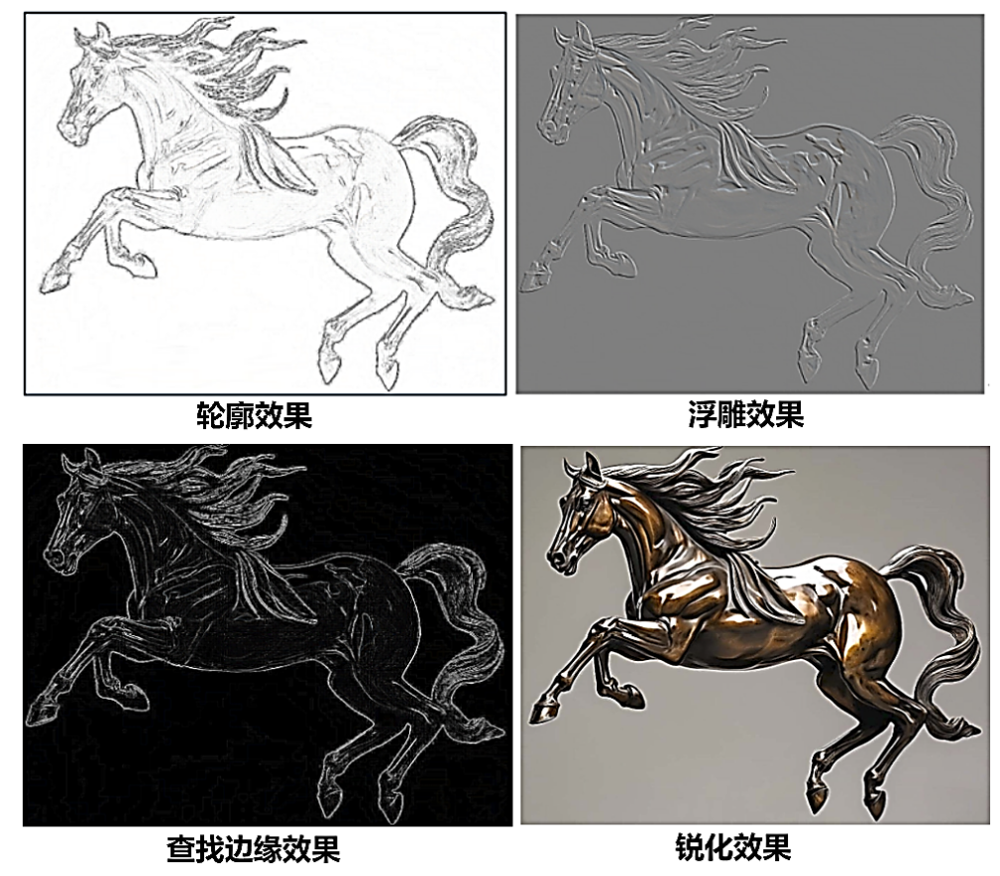
图4-21 滤镜效果（从左到右：轮廓、浮雕、边缘检测、锐化）
（3）添加文字（ImageDraw模块）
ImageDraw模块用于在图像上绘制文字、形状，需结合ImageFont加载字体文件。常用方法：draw.text((x,y), text, fill, font)，其中(x,y)为文字起始坐标，fill为颜色，font为字体对象。
例4-11：在图像上添加文字水印，效果如图4-22所示。
from PIL import Image, ImageFont, ImageDraw
# 加载图像
image = Image.open('images/校园一角.jpg')
# 创建绘图对象
draw = ImageDraw.Draw(image)
# 加载字体（Windows字体路径：C:\Windows\Fonts）
font_path = r'C:\Windows\Fonts\STXINGKA.TTF' # 行楷字体
font = ImageFont.truetype(font_path, size=80) # 字体大小80
# 添加文字（位置、内容、颜色）
text = "@中国传媒大学"
text_pos = (30, 30) # 左上角坐标
text_color = 'red'
draw.text(text_pos, text, fill=text_color, font=font)
# 保存并显示
image.save('output_image.jpg')
image.show()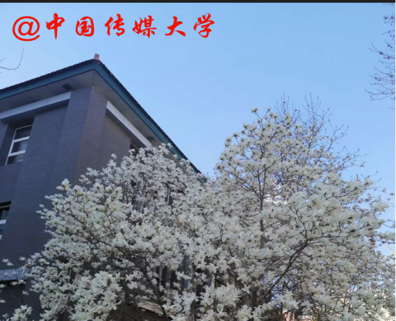
图4-22 图像添加文字效果
例4-12：制作如图 4-23所示文字印刷错位和阴影文字效果。
# 印刷错位和阴影文字
from PIL import Image, ImageFont, ImageDraw
# 加载图像
im = Image.open("images/校园图书馆.jpg")
draw = ImageDraw.Draw(im)
# 加载字体
font = ImageFont.truetype('STXINGKA.TTF', size=85)
# 1. 印刷错位效果（三色文字偏移）
draw.text((270, 80), text='@中国传媒大学', fill='#0F0', font=font) # 绿色
draw.text((280, 80), text='@中国传媒大学', fill='#00F', font=font) # 蓝色
draw.text((290, 80), text='@中国传媒大学', fill='#F00', font=font) # 红色
# 2. 阴影效果（黑色阴影+青色文字）
draw.text((270, 200), text='@中国传媒大学', fill='#000', font=font) # 阴影
draw.text((280, 210), text='@中国传媒大学', fill='#0FF', font=font) # 主体文字
# 显示
im.show()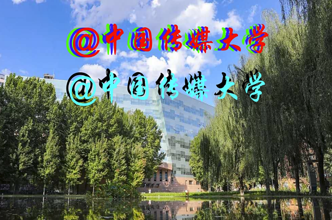
图4-23 特殊文字效果（上：印刷错位，下：阴影）
2. 案例目标
实现图像批处理：对指定文件夹中的所有图像统一进行增强（对比度）、滤镜（锐化）和文字添加（文件名），处理结果自动保存到目标文件夹，记录批处理日志。
3. 案例实现
核心为批处理函数，流程如图4-24所示。
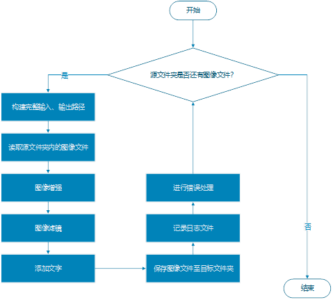
图4-24 批处理函数流程图
代码实现如下：
# 1. 导入库
from PIL import Image, ImageEnhance, ImageDraw, ImageFilter, ImageFont
import os, logging
# 2. 定义批处理函数
def batch_process_images(input_folder, output_folder):
# 检查目标文件夹，不存在则创建
if not os.path.exists(output_folder):
os.makedirs(output_folder)
logging.info(f"Created output folder: {output_folder}")
# 遍历输入文件夹
for filename in os.listdir(input_folder):
# 筛选图像文件（png/jpg/gif）
if filename.lower().endswith(('.png', '.jpg', '.gif')):
input_path = os.path.join(input_folder, filename)
output_path = os.path.join(output_folder, filename)
try:
# 打开图像
with Image.open(input_path) as img:
# 3. 图像增强：对比度增强（2倍）
enhancer = ImageEnhance.Contrast(img)
enhanced_img = enhancer.enhance(2.0)
# 4. 应用滤镜：锐化
enhanced_img = enhanced_img.filter(ImageFilter.SHARPEN)
# 5. 添加文字（文件名）
draw = ImageDraw.Draw(enhanced_img)
# 加载字体
font = ImageFont.truetype('C:/Windows/Fonts/msyh.ttc', size=50)
# 获取文件名（去掉扩展名）
file_name = os.path.splitext(filename)[0]
draw.text((50, 80), text=file_name, fill='#ff0', font=font)
# 6. 保存图像
enhanced_img.save(output_path)
# 记录日志
logging.basicConfig(filename='batch_process.log', level=logging.INFO)
logging.info(f"Processed {filename}")
except Exception as e:
# 异常处理
print(f"Error processing {filename}: {e}")
# 3. 调用批处理函数
if __name__ == "__main__":
input_folder = 'source_image' # 源图像文件夹
output_folder = 'dest_image' # 目标文件夹
batch_process_images(input_folder, output_folder)源文件夹中的部分图像效果如图4-25所示。
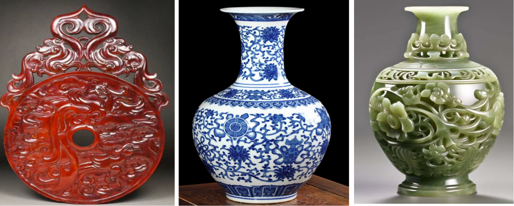
图4-25 源文件夹（source_image）中的原始图像
批处理后目标文件夹中部分图像效果如图4-26所示。
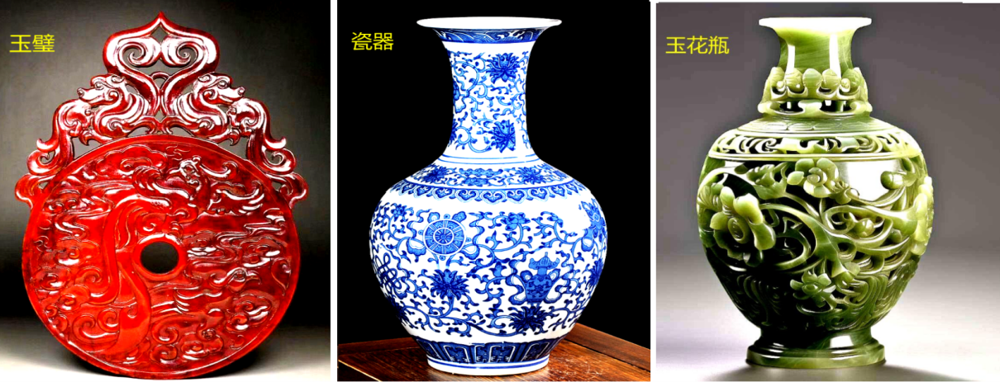
图4-26 目标文件夹（dest_image）中的批处理结果（添加文件名文字）
批处理的日志文件，部分内容如图4-27所示。
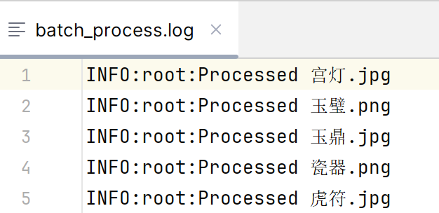
图4-27 批处理日志文件（batch_process.log）内容
4. 案例总结及思考
案例总结：
- 批处理核心：通过遍历文件夹、统一处理流程（增强、滤镜、文字），提高图像处理效率和一致性。
- 日志记录：使用logging库跟踪处理过程，便于问题定位。
- 异常处理：捕获文件操作异常，确保程序稳定运行。
案例思考（优化方向）：
- 面向对象重构：将批处理封装为类（如ImageBatchProcessor），模块化管理功能，提升可维护性和扩展性。
- 参数化配置：支持自定义增强系数、滤镜类型、文字样式，适应更多需求。
- 单元测试：为类方法编写测试用例，确保功能正确性。
优化后代码（类封装）
# 例4-14：批处理类
from PIL import Image, ImageEnhance, ImageDraw, ImageFilter, ImageFont
import os
import logging
# 配置日志（支持中文）
logging.basicConfig(
filename='batch_process.log',
level=logging.INFO,
encoding='utf-8',
format='%(asctime)s - %(levelname)s - %(message)s'
)
class ImageBatchProcessor:
def __init__(self, input_folder, output_folder):
self.input_folder = input_folder
self.output_folder = output_folder
def check_output_folder(self):
"""检查输出文件夹，不存在则创建"""
if not os.path.exists(self.output_folder):
os.makedirs(self.output_folder)
logging.info(f"创建输出文件夹: {self.output_folder}")
def process_image(self, input_path, output_path):
"""处理单张图像"""
try:
with Image.open(input_path) as img:
# 对比度增强（2倍）
enhancer = ImageEnhance.Contrast(img)
enhanced_img = enhancer.enhance(2.0)
# 锐化滤镜
enhanced_img = enhanced_img.filter(ImageFilter.SHARPEN)
# 添加文字水印
draw = ImageDraw.Draw(enhanced_img)
font = ImageFont.truetype('C:/Windows/Fonts/msyh.ttc', size=50)
file_name = os.path.splitext(os.path.basename(input_path))[0]
draw.text((50, 80), text=file_name, fill='#ff0', font=font)
# 保存
enhanced_img.save(output_path)
logging.info(f"处理文件: {os.path.basename(input_path)}")
except Exception as e:
logging.error(f"处理文件失败: {os.path.basename(input_path)} - {e}")
print(f"处理文件失败: {os.path.basename(input_path)} - {e}")
def batch_process_images(self):
"""批量处理图像"""
self.check_output_folder()
for filename in os.listdir(self.input_folder):
if filename.lower().endswith(('.png', '.jpg', '.gif')):
input_path = os.path.join(self.input_folder, filename)
output_path = os.path.join(self.output_folder, filename)
self.process_image(input_path, output_path)
# 运行程序
if __name__ == "__main__":
processor = ImageBatchProcessor('source_image', 'dest_image')
processor.batch_process_images()日志文件名为 batch_process.log，日志级别为 INFO，编码为 utf-8，日志格式包括时间、日志级别和消息。在图像处理过程中，日志会记录每个文件的处理情况，包括成功处理和失败处理的信息。日志文件内容如图4-29所示。
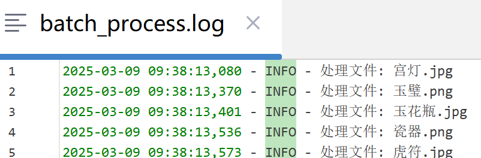
图4-29 优化后日志文件内容（含时间戳）
运行程序后，原始图片文件夹和目标图片文件夹内容如图4-30(a)所示，部分图片处理前后效果对比如图4-30(b)所示。
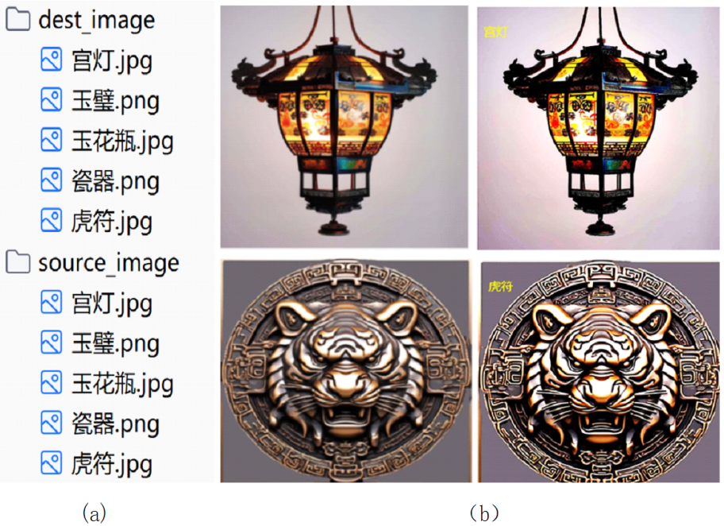
图4-30 文件夹内容对比（a：源文件夹与目标文件夹，b：处理前后效果）
4.7 举一反三
（1）制作六宫格图像
需求：自选图像分割为6张，分别添加调色/滤镜效果，拼合为六宫格，并为每张图像添加效果说明文字。效果如图4-31所示。
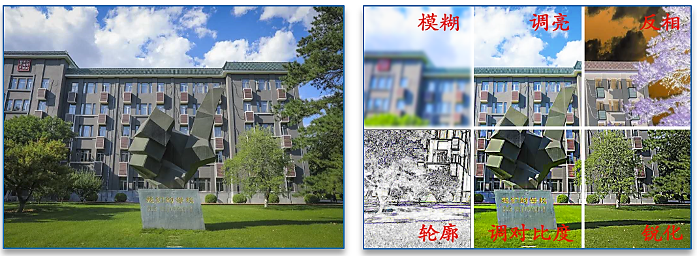
图4-31 六宫格效果（每张图像标注效果名称）
（2）批处理一寸证件照
需求：将指定文件夹中的图像批量处理为标准一寸证件照（尺寸259×413像素），添加白色边框，进行图像增强，并支持将8张证件照排版为一个打印版面。
核心技术点：使用image.resize()调整尺寸（结合Image.Resampling.LANCZOS高质量重采样），添加白边，图像增强（锐化、对比度），多图排版。
操作步骤提示：
- 导入库与初始化参数：导入Image、os库，定义证件照尺寸、白边宽度、源/目标文件夹路径。
- 创建目标文件夹与遍历源文件：检查目标文件夹是否存在，遍历源文件夹中的图像文件（仅处理.jpg/.jpeg/.png）。
- 单张证件照处理：调整图像尺寸（保持比例）、添加白边、图像增强（锐化、对比度）。
- 多证件照排版（8张/版面）：创建大画布，将8张一寸证件照按2行4列排列，添加间距。
如图 4-32所示为原始图像文件夹和批处理后的目标文件夹。
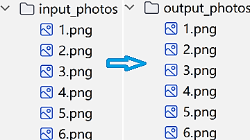
图4-32 批处理文件夹对比（左：input_photos，右：output_photos）
如图 4-33是一张原始图像和处理后的带白色边框的一寸照片。
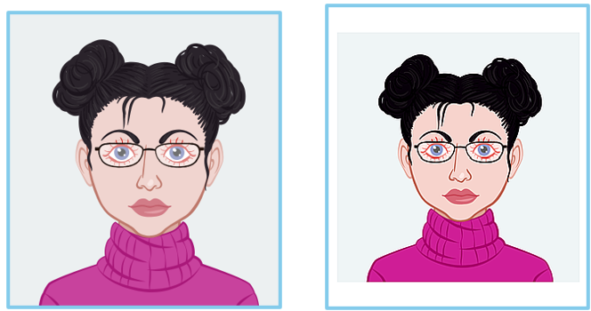
图4-33 原始图像（左）与处理后带白边的一寸证件照（右）
如图 4-34是8张一寸证件照排版后的打印版面。
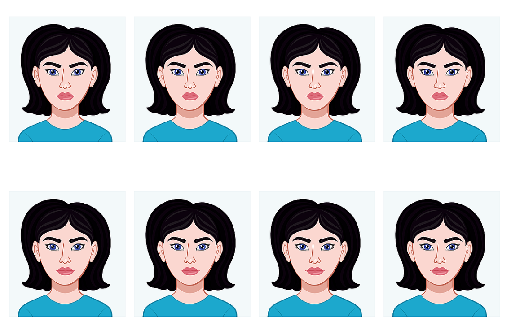
图4-34 8张一寸证件照排版后的打印版面
（3）制作“图像处理工具”GUI
本案例基于 Tkinter 和 Pillow 的图像处理库完成“图像处理工具”设计。也可以自己动手借助AI工具的帮助完成。 “图像处理工具”GUI包括的功能，如图4-35所示。
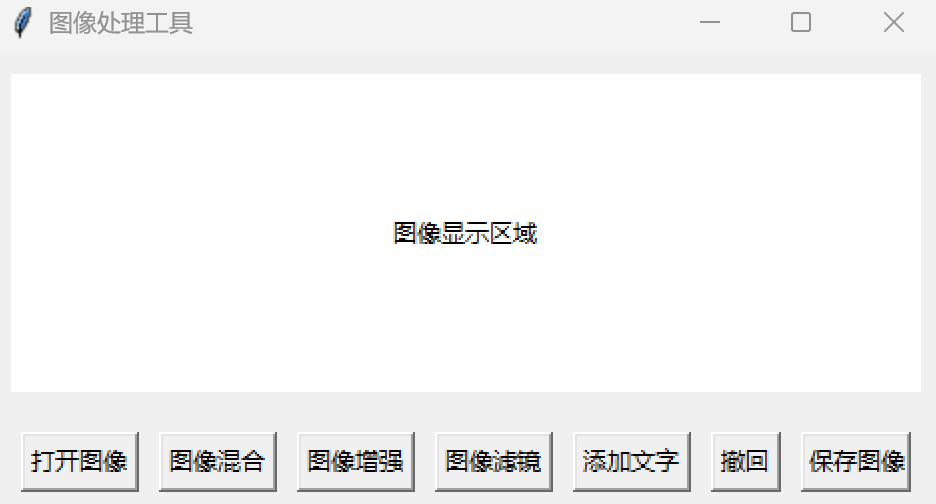
图4-35 图像处理工具GUI界面（含功能按钮与图像显示区域）
核心功能模块说明：
1. 基础功能（打开/保存/撤回）
-
打开图像：使用
tkinter.filedialog.askopenfilename选择图像文件（支持JPG/PNG/BMP/GIF），加载后显示在界面。 -
保存图像：使用
asksaveasfilename选择保存路径，支持JPG/PNG格式。 - 撤回操作：用列表保存历史图像状态，撤回时恢复到上一步（需注意图像对象的深拷贝）。
2. 图像混合功能
- 支持选择混合模式（滤色、正片叠底、叠加、变暗、变亮），弹出选择窗口（如图4-36）。
- 自动调整两张图像尺寸一致，混合后实时预览。
- 核心代码：调用
ImageChops模块对应混合函数。
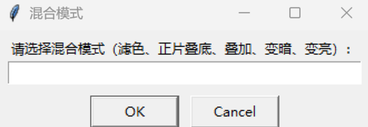
图4-36 混合模式选择弹窗
3. 图像增强功能
- 支持亮度、对比度、锐度、颜色增强，可输入增强系数（如图4-37）。
- 增强系数范围：0.1~5.0，1.0为原图。
- 核心代码：使用
ImageEnhance模块对应调整器。

图4-37 图像增强参数设置弹窗
4. 图像滤镜功能
- 支持模糊、锐化、轮廓、浮雕、边缘检测等滤镜，可多选同时应用（如图4-38）。
-
核心代码：遍历选中的滤镜，调用
image.filter(ImageFilter.XXX)。
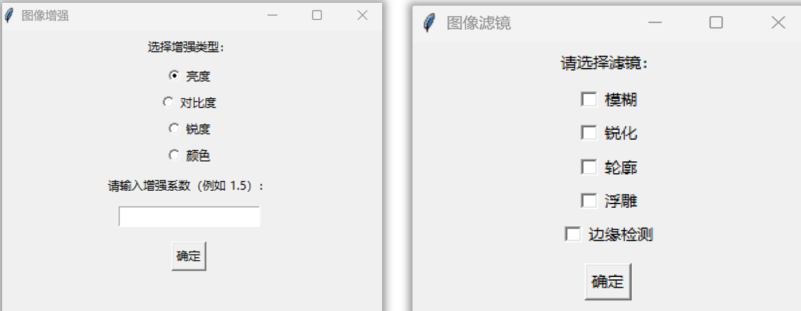
图4-38 滤镜选择弹窗
5. 添加文字功能
- 支持设置文字内容、位置（X/Y坐标）、大小、颜色（集成颜色选择器）、样式（普通/阴影/轮廓）（如图4-39）。
-
颜色选择：使用
tkinter.colorchooser.askcolor获取颜色值。 -
核心代码：
ImageDraw.Draw.text()，阴影效果通过偏移绘制实现。
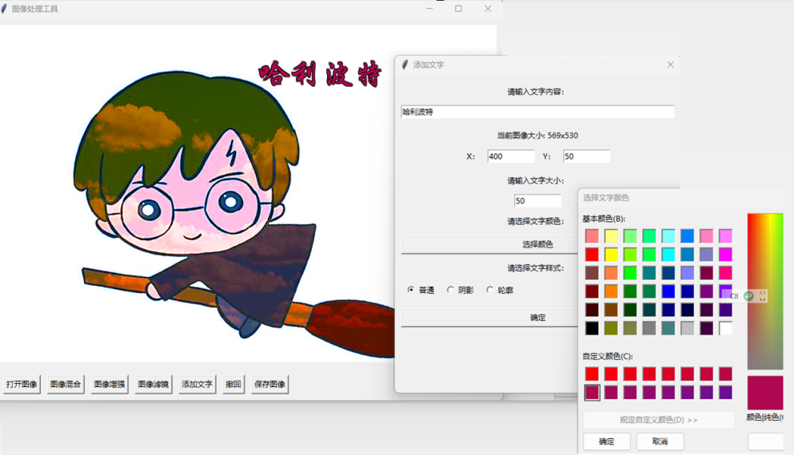
图4-39 文字设置弹窗（含颜色选择器）
6. 核心技术要点
-
图像显示：将Pillow图像转换为Tkinter的
PhotoImage，显示在Label上。 -
撤回功能：用列表
history = []保存每次处理前的图像对象，撤回时history.pop()恢复。 - 实时预览：每次操作后立即更新显示区域的图像，无需手动刷新。
系统扩展建议：可新增滤镜效果（如高斯模糊、油画效果）、文字样式（如旋转文字、渐变文字）、批量处理功能（导入文件夹批量操作），进一步提升工具实用性。